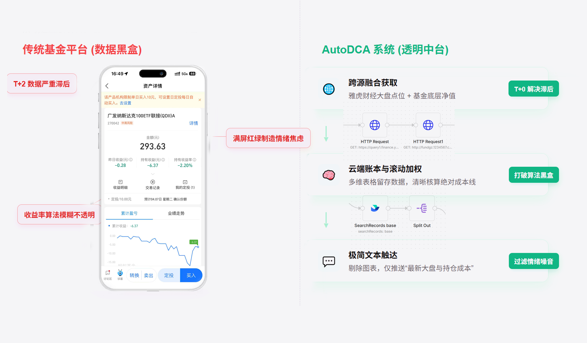
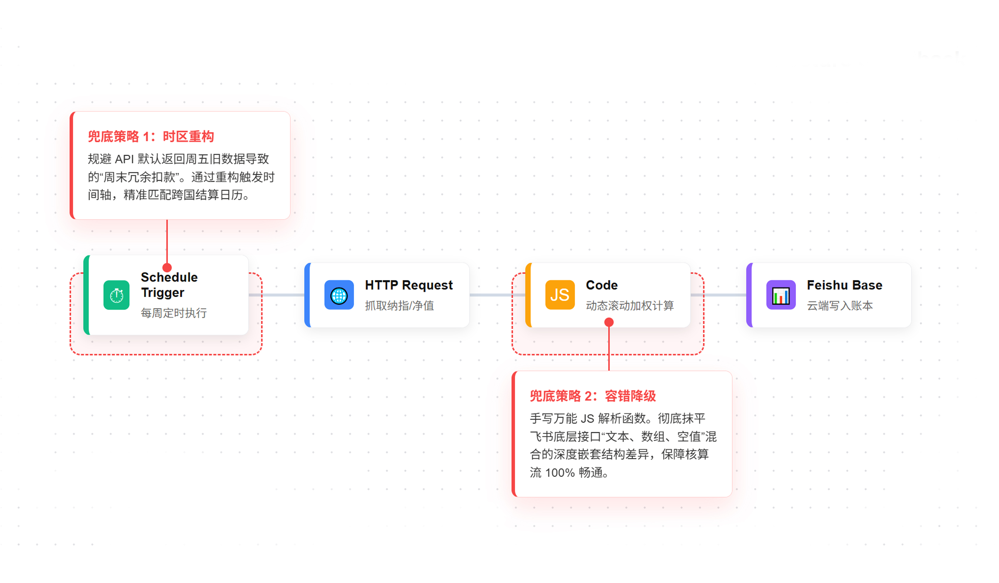
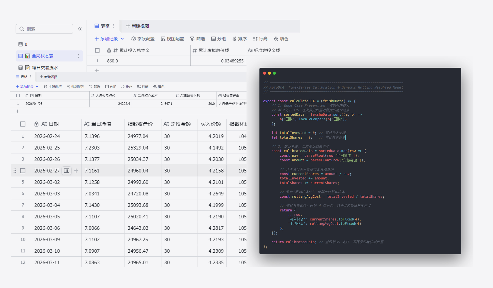
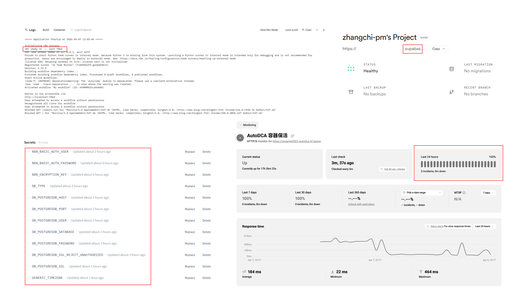

针对传统金融软件“持仓成本失真”与“情绪干扰”的痛点，我利用 n8n 独立架构了一套脱机的全量化定投流水线。实现了从跨国数据抓取、动态算法核算、到多端战报推送的完整商业逻辑闭环。
在调研日常定投（DCA）行为时，我发现市面上的基金软件存在两个极其致命的体验断层：第一，QDII 基金存在 T+2 的净值滞后，用户无法获得实时的盘感反馈；第二，平台收益率算法各异且模糊，无法提供一条清晰、准确的“绝对平均持仓成本线”。
产品重塑方案：我决定抛弃传统 App，利用 RPA 工具将底层数据所有权收回。以“绝对成本线”为锚，为用户建立屏蔽市场噪音的“投资钝感力”。

搭建 n8n 流水线时，真正的挑战在于应对外部金融数据源的非标准反馈与极端场景。我设计了涵盖触发、抓取、拆包、核算的 6 段式容错工作流。
面对飞书 API 深度嵌套且格式不一（文本/数组混合）的 JSON 数据，我手写 JS 降级函数，抹平了底层存储结构差异，保障核算流 100% 畅通。同时针对跨国时区差异做了专门处理。

为了精准计算出那条能提供情绪价值的“灵魂成本线”，简单的均价逻辑是不够的。我在 Code 节点中实现了基于时间序列的动态份额累加模型，并做了极客级的时序优化。

作为一套自动化系统，最终的交付界面就是那条每日推送的短消息。我将系统的最终触达形式做到了极简，并在部署层面实现了彻底的“脱机运行”。
